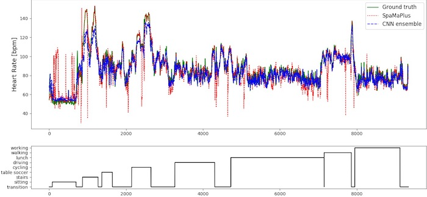

PPG-based continuous heart rate monitoring is essential in a number of domains, e.g. for healthcare or fitness applications. Recently, methods based on time-frequency spectra emerged to address the challenges of motion artefact compensation. However, existing approaches are highly parametrised and optimised for specific scenarios of small public datasets. We address this fragmentation by contributing research into the robustness and generalisation capabilities of PPG-based heart rate estimation approaches. First, we introduce a novel large-scale dataset (called PPG-DaLiA), including a wide range of activities performed under close to real-life conditions. Second, we extend a state-of-the-art algorithm, significantly improving its performance on several datasets. Third, we introduce deep learning to this domain, and investigate various convolutional neural network architectures. Our end-to-end learning approach takes the time-frequency spectra of synchronised PPG- and accelerometer-signals as input, and provides the estimated heart rate as output. Finally, we compare the novel deep learning approach to classical methods, performing evaluation on four public datasets. We show that on large datasets the deep learning model significantly outperforms other methods: The mean absolute error could be reduced by 31% on the new dataset PPG-DaLiA, and by 21% on the dataset WESAD.
The original data as used in the paper can be downloaded via this link: PPG-DaLiA (Sensors'19) dataset (2.7 GB)
You may use this data for scientific, non-commercial purposes, provided that you give credit to the owners when publishing any work based on this data.